Fullscreen mode
Just press »F« on your keyboard to show your presentation in fullscreen mode. Press the »ESC« key to exit fullscreen mode.
Overview mode
Press "Esc" or "o" keys to toggle the overview mode on and off. While you're in this mode, you can still navigate between slides, as if you were at 1,000 feet above your presentation.
OpenGL
Lesson 3
Author: Egoshkin Danila Igorevich
GLM
GLM - OpenGL Mathematics

#include <.../glm/glm.hpp>
#include <.../glm/gtc/type_ptr.hpp>
using namespace glm;
void foo(){
vec4 v(0.0f);
mat4 m(1.0f);
...
glVertex3fv(value_ptr(v))
glLoadMatrixfv(value_ptr(m));
}
#include <.../glm/glm.hpp>
#include <.../glm/gtc/matrix_transform.hpp>
void foo(){
glm::vec4 Position = glm::vec4(glm:: vec3(0.0f), 1.0f);
glm::mat4 Model = glm::translate(glm::mat4(1.0f), glm::vec3(1.0f));
Model = glm::rotate(Model,45,0,1,0);
glm::vec4 Transformed = Model * Position;
}
Camera
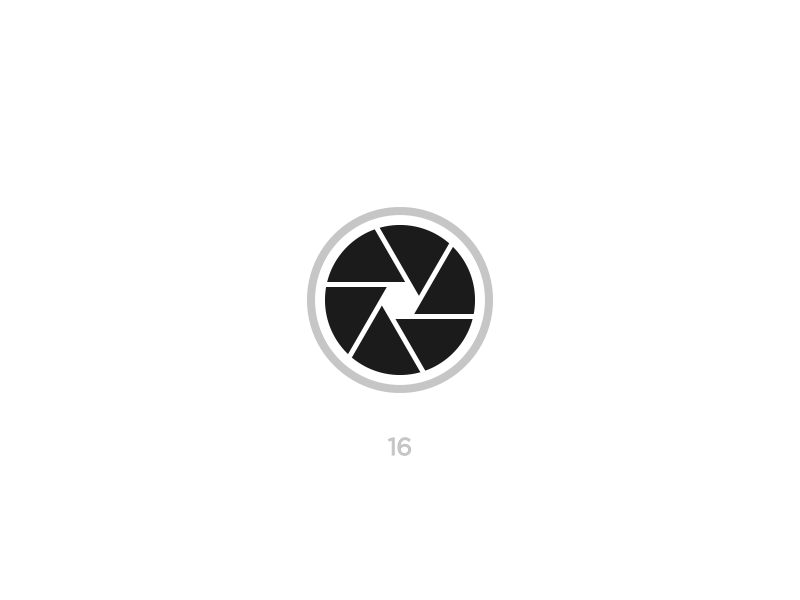Camera Free&Target (trajectory)
.gif)
Camera - three types of camera
1. Camera Target (trajectory) - Third Person Perspectives
2. Camera Target (trajectory) - Second Person Perspectives!? 0_0
3. Camera Free - First Person Perspectives
Camera Target (trajectory) - Third Person Perspectives

Camera Target (trajectory) - Tomb Raider 1996
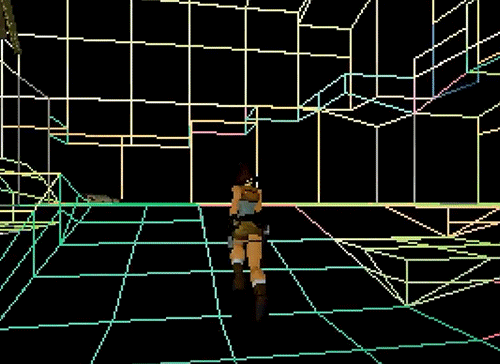Camera Target (trajectory) - Colin McRae Rally 1998
.gif)
Camera Target (trajectory) - 3DChess
Camera Target (trajectory) - HoMM5 2006
Camera Target (trajectory) - Ori And The Blind Forest 2015
Camera Target (trajectory) - Second Person Perspectives!? 0_0
https://www.youtube.com/watch?v=mC8QoRa8y_QNot only Camera Target (trajectory)
Not only Camera Target (trajectory)

Camera Free - First Person Perspectives
Camera Free - MineCraft 2009

Camera Free

Camera Free
Camera - Math - Matrix

- Local space (or Object space) ()
- World space (Model Matrix)
- View space (or Eye space) (View Matrix)
- Clip space
- Screen space


Camera - Math - Perspective - with - Art and Composition

Book - Nikolai Li
Risunok. Osnovy uchebnogo akademicheskogo risunkaCamera - FOV
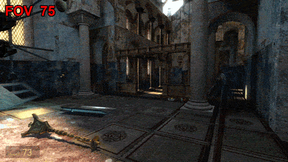Camera - FOV
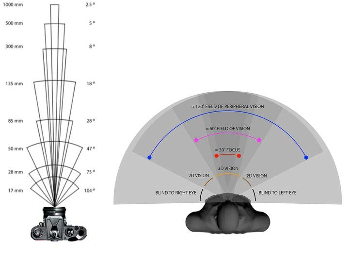Camera - FOV - Glass

Camera - FOV - FishEye
First known fisheye image - Wood's shot taken from a bucket of water. 1905 year 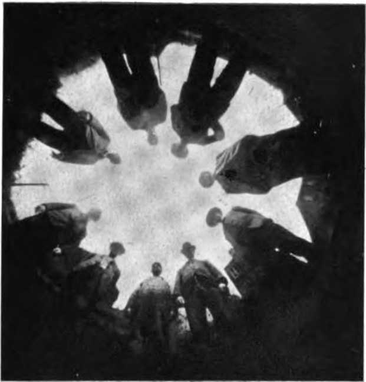Camera - FOV
Lenses by focal length - фокус камери
Camera - FOV
Lenses by focal length - фокус камериCamera - FOV - Predator vs Prey
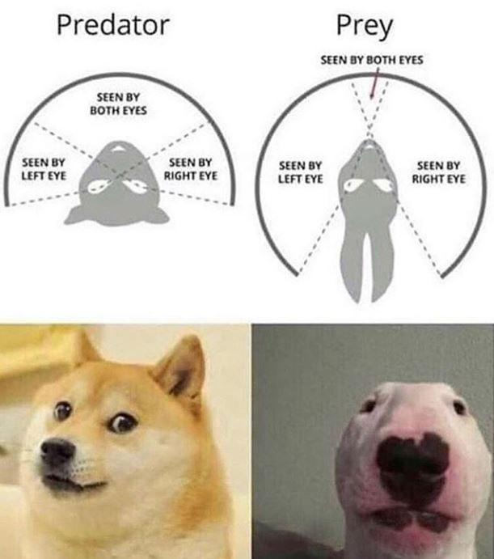Camera - FOV - Bugs
// An abstract class
class Test
{
// Data members of class
public:
// Pure Virtual Function
virtual void show() = 0;
/* Other members */
};
*But why class Test - is an abstract class? (P.S. // Data members of class )
virtual class = interface
virtual class = interface - the class is purely a definition, and has no actual implementation
class Test
{
public:
// Pure Virtual Function
virtual void show() = 0;
virtual bool openFile(const char *filename) = 0;
virtual bool closeFile() = 0;
virtual ~Test() {} // make a virtual destructor in case we delete an IErrorLog pointer, so the proper derived destructor is called
};
abstract class
class Test
{
string text = "Hello"
public:
virtual void show(){
printf("%s", text.c_str());
};
virtual bool openFile(const char *filename) = 0;
virtual ~Test() {} // make a virtual destructor in case we delete an IErrorLog pointer, so the proper derived destructor is called
};- abstract classes may contain state (data members) and/or implementation (methods)
- abstract classes can be inherited without implementing the abstract methods (though such a derived class is abstract itself)
Controller - Device
E:\Learn It\GAMES-Programming\Engine\MyEngine\CORE_SimpleCore


Camera - Methods
Bullet time
Bullet time
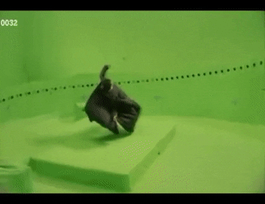Dutch angle - Голландский кут - Голландский угол
Dutch angle
Dutch angle
Dutch angle
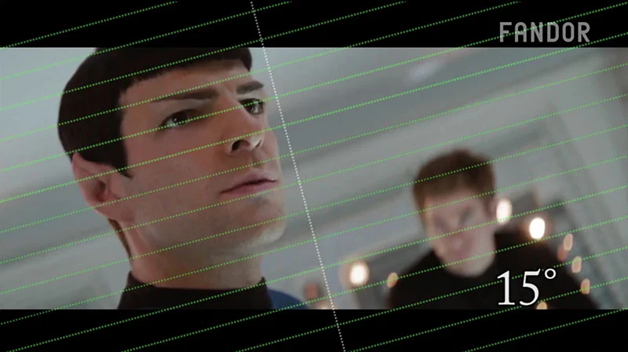Dutch angle
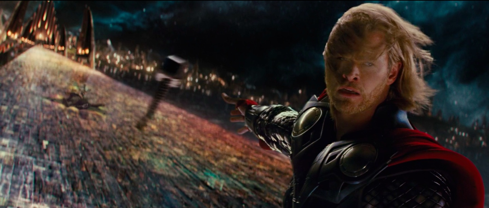Dutch angle
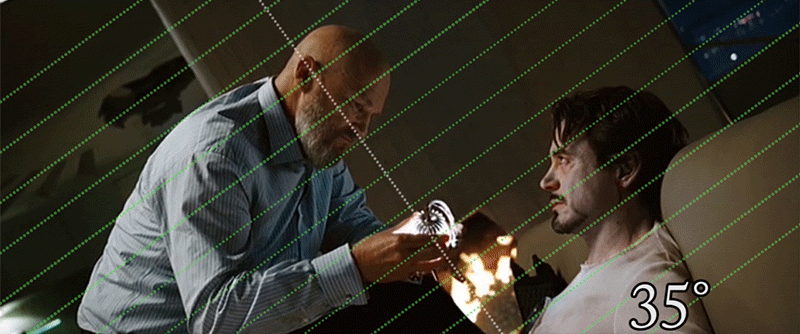Dutch angle
Dutch angle
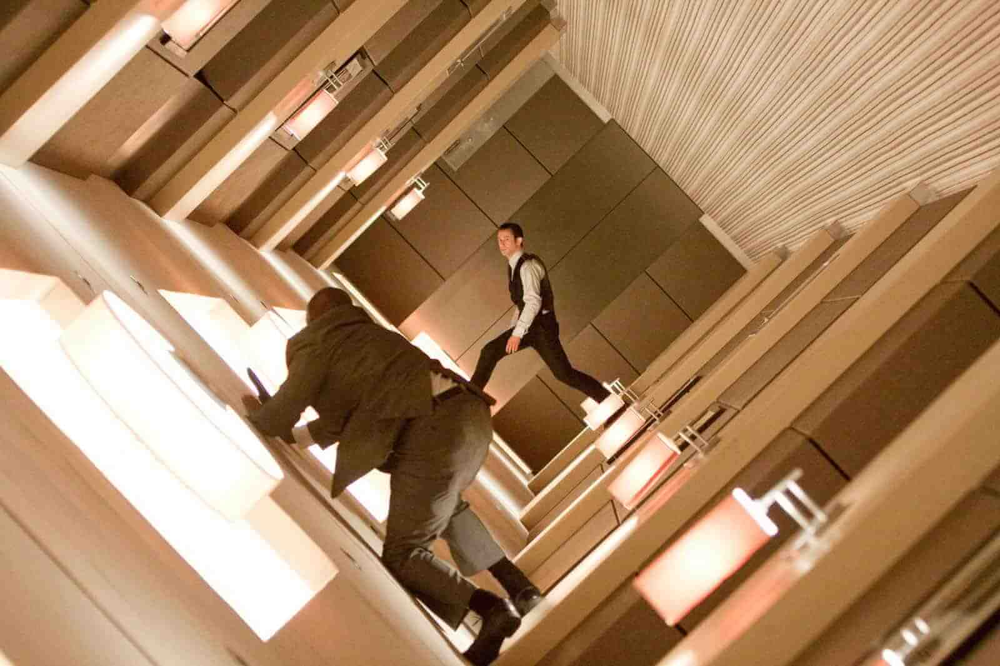https://eycndy.com/dutch-angle
https://youtu.be/R9FUEScjB1U
Thanks for your attention :)